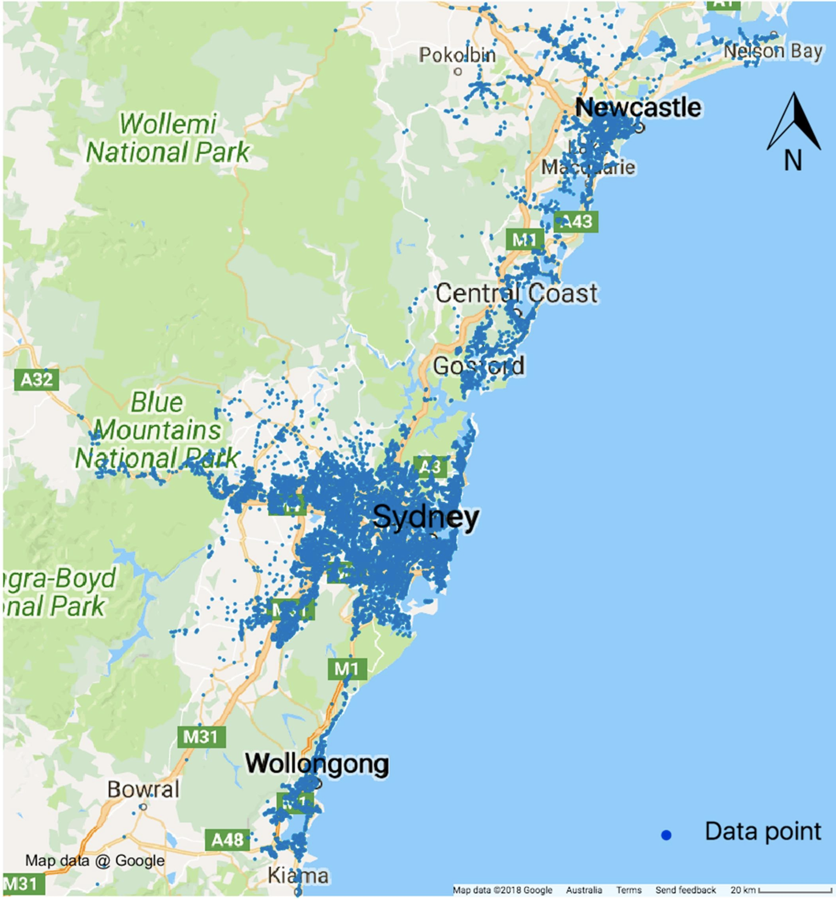
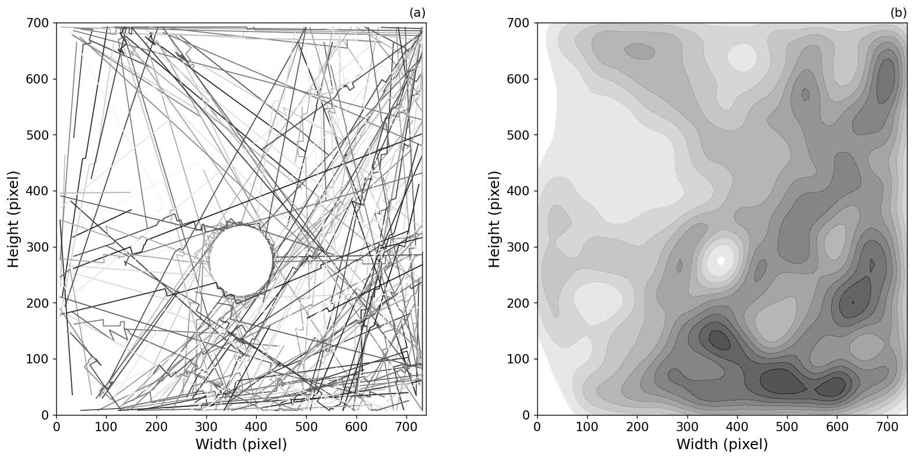

Data-driven transport modelling to deal with civil emergencies
Dr Minh Kieu
Lecturer
Civil and Environmental Engineering, University of Auckland
These slides:
https://bit.ly/2021-emergency
Minh Kieu (PhD)
- From 2020: Lecturer in Transport Analytics, University of Auckland, NZ
- 2018-2020: Research Fellow at University of Leeds, UK
- 2016-2018: Research Scientist at Data61, CSIRO, Australia
Civil emergencies and natural disasters can have devastating impacts
It's extremely difficult to know how to best respond to an emergency
Build a clear picture of the current situation
Predict the future
How do we use science to support policy makers?
Big Data of individuals are key
Complex systems modelling

Building a clear picture of the situation: Mobile data
Large population coverage
Privacy concerns, usually very coarse data

Building a clear picture of the situation from open-source data: Google Travel time

Nguyen, Bentley, Kieu, Fu and Cai (2019) A Deep Learning System for Travel Speed Predictions on Multiple Arterial Road Segments. Transportation Research Record: Journal of the Transportation Research Board
Urban Flow Data: Smart Card data
Kieu, Ou and Cai (2018) Large-scale transit market segmentation with spatial-behavioural features. Transportation Research Part C: Emerging Technologies 90, 97-113
Kieu, Bhaskar and Chung (2015) A modified density-based scanning algorithm with noise for spatial travel pattern analysis from smart card AFC data. Transportation Research Part C: Emerging Technologies 58, 193-207
Kieu, Bhaskar and Chung (2014) Passenger Segmentation Using Smart Card Data. IEEE Transactions of Intelligent Transport Systems 16 (3), 1537 - 1548

Fueling simulation models of complex systems: Synthetic data
Classical data-anonymisation techniques are ineffective
Privacy concerns
Sample size
Probabilistic generation of synthetic data (FRDF, 2020-2022)
Kieu, Meredith and Raith (TBA) Synthetic generation of individual transport data: the case of Smart Card data. Paper to be submitted in Oct 2021
Agent-Based Modelling: Simulate complex systems with individual interactions
Issues in complex systems modelling: Divergence
There is no systematic mechanism to incorporate new data into complex simulation models
Data Assimilation
Improve estimates of the true system state by combining noisy, real-world observations and model estimates

Project 1
Bus Simulation with a Particle Filter
We have GPS bus positions, but to make good term forecasts we need to be able to infer other factors
Number of people waiting at bus stops
Number of people on the bus
Surrounding traffic levels
Project 1
Bus Simulation with a Particle Filter
Kieu, Malleson, Heppenstall (2019) Dealing with uncertainty in agent-based models for short-term predictions , Royal Society of Open Science 7 (1), 191074>
Kieu, Ngoduy, Malleson, Chung (2019) A stochastic schedule-following simulation model of bus routes , Transportmetrica B: Transport Dynamics 7 (1), 1588-1610
Bus Simulation - No Data Assimilation

Bus Simulation with a Particle Filter
Project 2: Agent-based model of the Grand Central Station (New York)
Reverse-Jump Unscented Kalman Filter
Improve estimates of the true system state by combining noisy, real-world observations and model estimates

Clay, Ward, Ternes, Kieu, Malleson (2021) Real-time agent-based crowd simulation with the Reversible Jump Unscented Kalman Filter. Simulation Modelling Practice and Theory
Agent-Based Modelling papers:
Clay, Ward, Ternes, Kieu, Malleson (2021) Real-time agent-based crowd simulation with the Reversible Jump Unscented Kalman Filter. Simulation Modelling Practice and Theory
Kieu, Malleson, Heppenstall (2019) Dealing with uncertainty in agent-based models for short-term predictions , Royal Society of Open Science 7 (1), 191074>
Kieu, Ngoduy, Malleson, Chung (2019) A stochastic schedule-following simulation model of bus routes , Transportmetrica B: Transport Dynamics 7 (1), 1588-1610
Data analytics papers:
Kieu, Meredith and Raith (TBA) Synthetic generation of individual transport data: the case of Smart Card data. Paper to be submitted in Oct 2021
Kieu, Ou and Cai (2018) Large-scale transit market segmentation with spatial-behavioural features. Transportation Research Part C: Emerging Technologies 90, 97-113
Kieu, Bhaskar and Chung (2015) A modified density-based scanning algorithm with noise for spatial travel pattern analysis from smart card AFC data. Transportation Research Part C: Emerging Technologies 58, 193-207
Kieu, Bhaskar and Chung (2014) Passenger Segmentation Using Smart Card Data. IEEE Transactions of Intelligent Transport Systems 16 (3), 1537 - 1548
Nguyen, Bentley, Kieu, Fu and Cai (2019) A Deep Learning System for Travel Speed Predictions on Multiple Arterial Road Segments. Transportation Research Record: Journal of the Transportation Research Board